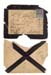
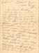
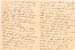
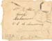
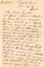
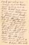
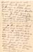
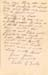

Letter from Lucy Allen Kirby of Drayton Beauchamp, Herts, to William Allen of Locke, Crawford, Arkansas - Jan 1898




Letter from Lucy Allen Kirby of Drayton Beauchamp, Hertfordshire, England, to Mary Malinda Burke Allen of Locke, Crawford, Arkansas - September 1930




